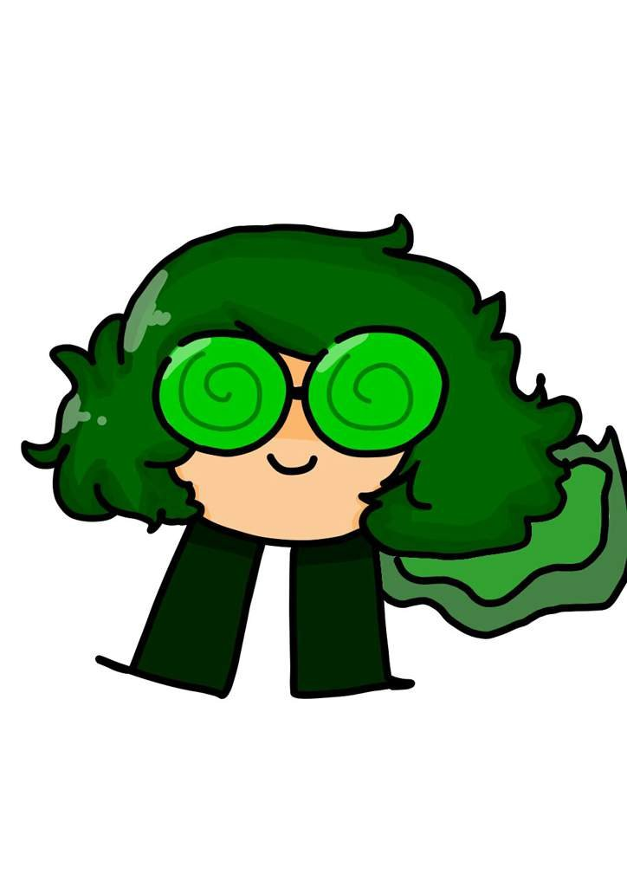

 Вару - валет пік.
Постійно іронізуючий провокатор, брехун і хитрун, справжня мотивація якого
залишається загадкою. Один із головних персонажів «Федор x 9» та «Землі Королів».
Характер
Хитрий, егоїстичний, хамуватий клон, що відчуває задоволення, від провокації інших клонів. Мріє бути
клоном #1 та лідером вісімки. Має манію величі. Під час спілкування зазвичай неприємний: образливо
жартує, мавпує, не поважає інших клонів, тисне на болючі точки співрозмовників і нагадує гріхи їх
минулого.
Від пікової масті Вару передалося небажання пристосовуватися до чинних умов (контркон'юктурність),
руйнувати порядки (деконструкція), що склалися, що можна побачити в сценах взаємодії Вару з іншими
клонами. Замість концентрації на собі, він воліє взаємодіяти з оточуючими, поводиться досить
активно і часто діє у своїх цілях. Має політичні амбіції[1].
Звичайний одяг
У повсякденному житті Вару носить окуляри зеленого кольору зі спіралями на лінзах, синій светр,
також зі спіраллю, темно-зелені штани-клеш і кислотно-зелені туфлі з гострим носами.
Картковий одяг
Вару Карта
Зображення офіційної карти Вару.